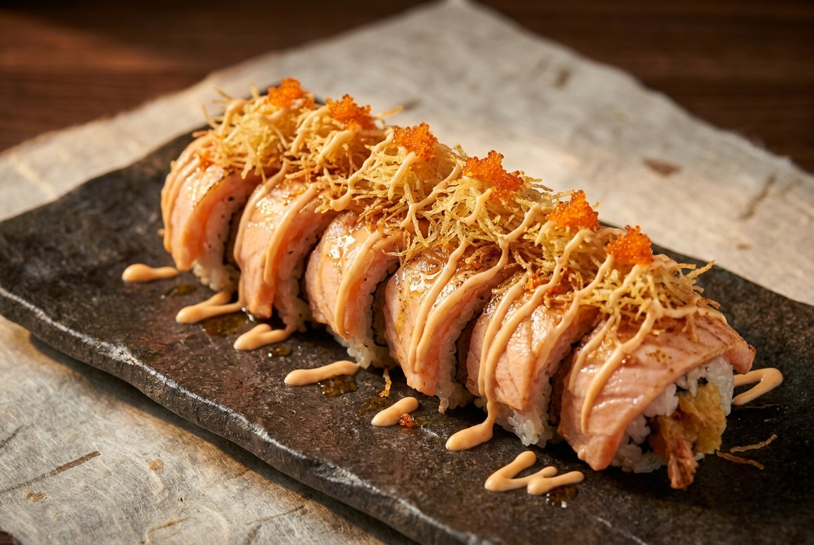
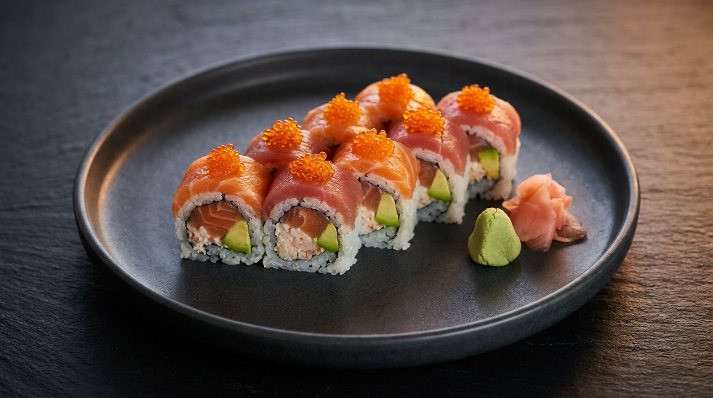
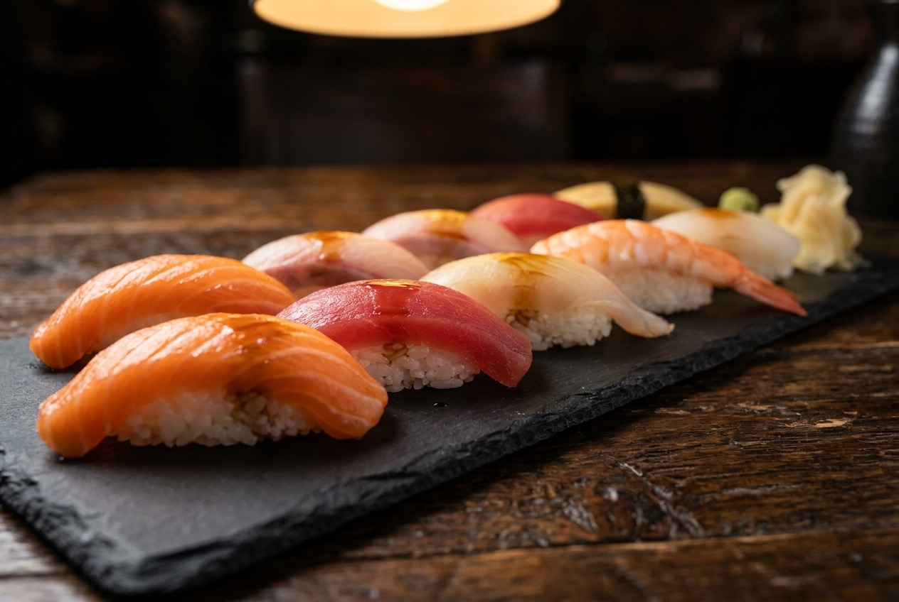
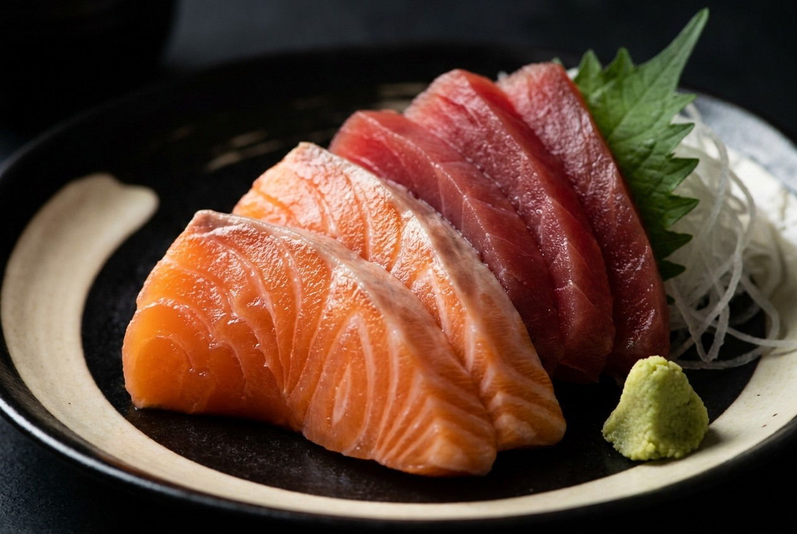
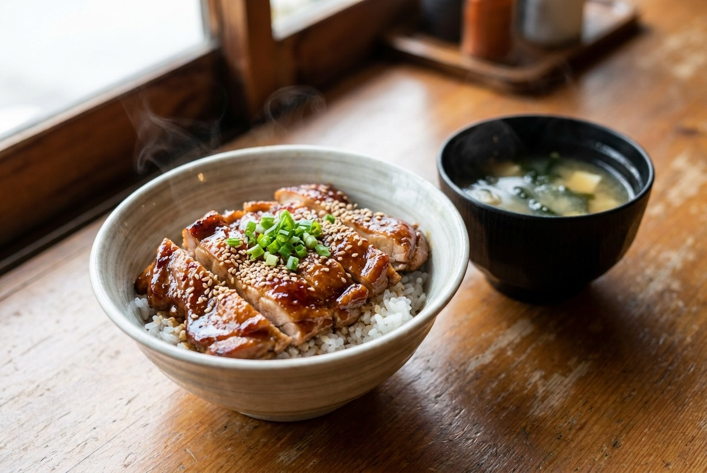
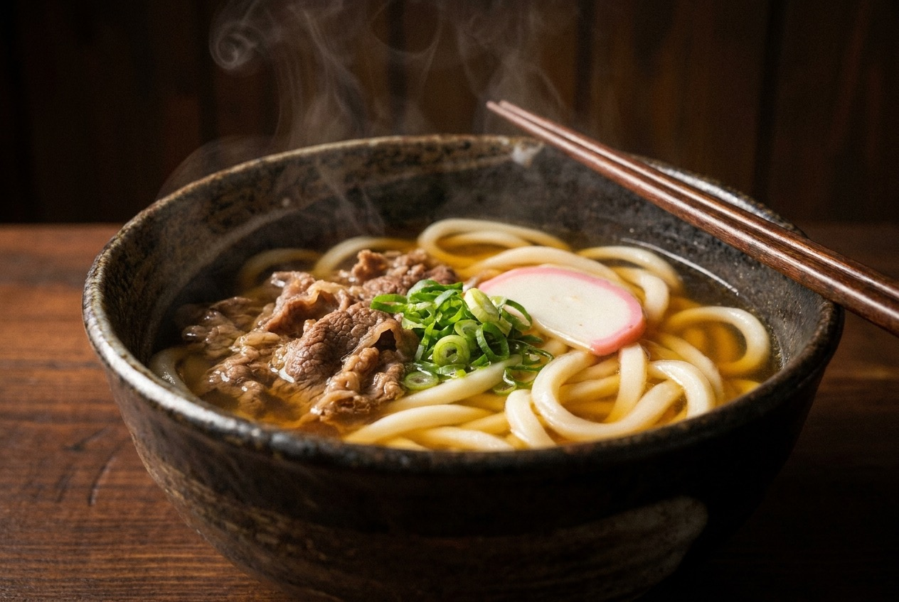
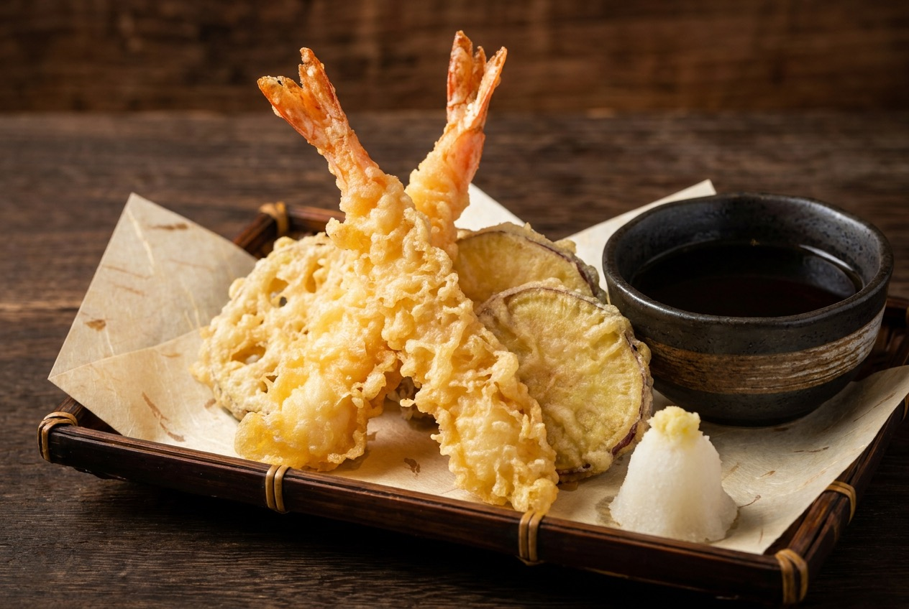
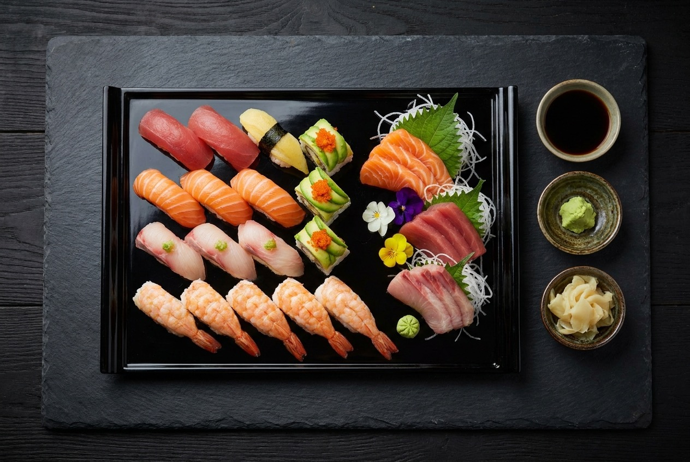
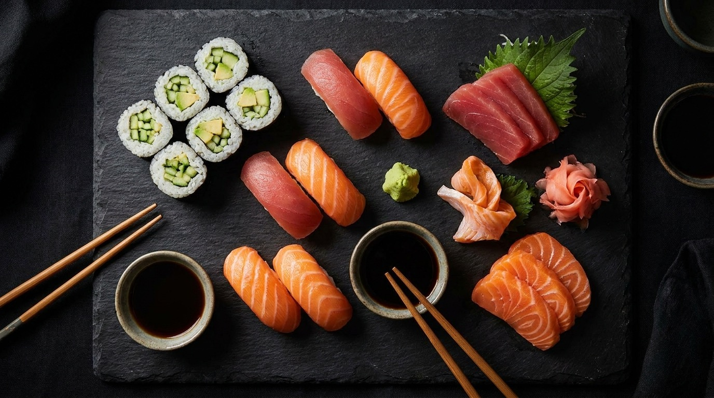

Lion King Roll$15.95
Prawn tempura, crab, avocado and cucumber, topped with seared wild salmon, Parmesan, crunch potato and tobiko.

Lynn Valley Centre, North Vancouver
Fresh, made-to-order Japanese in the heart of Lynn Valley.
Order direct with no extra fee. 10% off take-away orders.
Made to order
Cut to order at the counter. Regulars come for the freshness, the udon broth, the teriyaki and tempura that stay crisp all the way home.

Prawn tempura, crab, avocado and cucumber, topped with seared wild salmon, Parmesan, crunch potato and tobiko.

Cut to order, from tamago to toro and uni.

Twelve pieces of the day's freshest fish.

A regular's favourite. Lunch, with rice and miso soup.

The broth regulars call the best around.

Crisp and never greasy. Prawn and yam.

A generous mix to share, or keep to yourself.
Our counter
Tucked inside Lynn Valley Centre, Sushi5 is the kind of place locals fold into their week. Nigiri and sashimi are cut to order, the rolls are built fresh, and the udon broth is the one regulars say they cannot find anywhere else.
Service is quick and kind. Plenty of people order the same thing every visit, the teriyaki, the tempura, a double salmon roll, and walk out greeted by name. Dine in, take it home, or have it delivered. It tastes the same either way.

Cut to order. Carried with care.
In their words
Rated 4.2 on Google across 258 reviews. A few in full, with their sources.
My favourite sushi place in Lynn Valley mall. I go there at least once a week for lunch or dinner. Very good food, friendly staff, quiet and nice atmosphere and decent prices. Highly recommend for everyone who likes Japanese food.
The nigiri and sashimi were especially fresh, the tempura was crisp and delicious.
Their broth is by far the best I've had in comparison to other sushi places.
Great teriyaki and tempura, excellent miso. Consistently been a family favourite.
Visit & order
| Monday | 11:00 AM – 7:00 PM |
|---|---|
| Tuesday | 11:00 AM – 7:00 PM |
| Wednesday | 11:00 AM – 7:00 PM |
| Thursday | 11:00 AM – 8:00 PM |
| Friday | 11:00 AM – 8:00 PM |
| Saturday | 11:00 AM – 7:00 PM |
| Sunday | 11:00 AM – 6:00 PM |
Hours may vary on statutory holidays. A quick call confirms.
1199 Lynn Valley Rd #115
North Vancouver, BC V7J 3H1
Inside Lynn Valley Centre, Unit 115